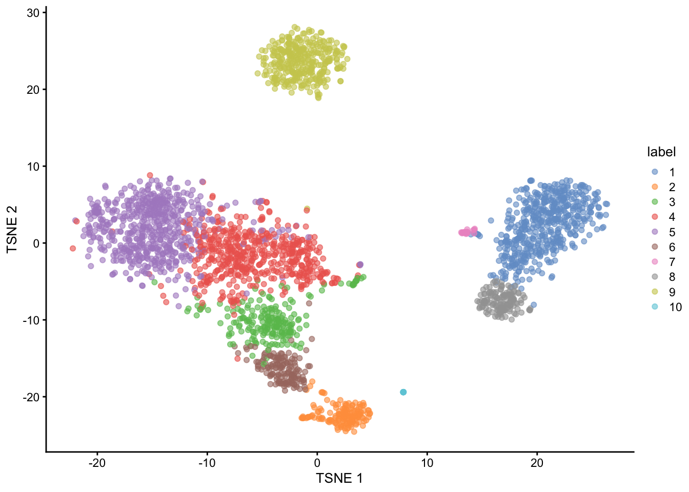
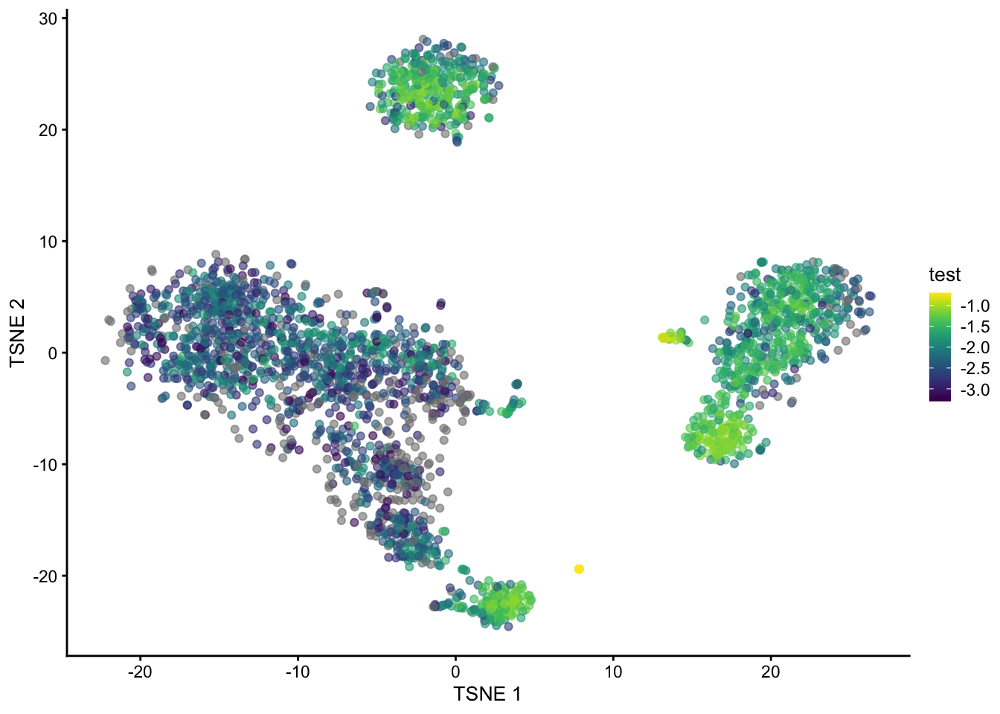

library(TENxPBMCData)
library(edgeR)
library(datathin)
library(scater)
library(scran)
library(igraph)
library(tidyverse)In this post I describe an idea for quantifying and visualizing uncertainty in k-nearest neighbour (KNN) graphs in single-cell RNA sequencing data.
KNN graphs are an important tool in single-cell analysis: they are used to cluster cells, as part of algorithms that are commonly used to visualise scRNA-seq and have recently been used to develop ‘cluster-free’ differential expression and abundance testing methods (milo and miloDE).
Despite this widespread use I am not aware of any work to date that seeks to quantify how uncertain we might be about the KNN graph we build and work with.
In this post I suggest using recent advances in ‘data thinning’ scRNAseq to quanity this uncertainty. Briefly, data thinning methods allow a scRNAseq dataset to be ‘partitioned’ into multiple independent datasets: each entry in the count matrix is split into multiple counts in such a way that the split counts are independent. The partitioned datasets can then be used in a similar way to data split using traditional test-training set splitting.
I illustrate my idea on the ‘traditional’ pbmc3k dataset. First we load some relevant libraries.
Next, we load the pbm3k data, and quickly process it using standard Biocondutor packages. Specifically we:
- Normalize the data,
- Filter the highly variable gene,
- Compute a PCA reduced dimensionality representation,
- Compute a tSNE reduced dimensionality representation (uses the KNN graph), and
- Cluster the data (uses the KNN graph).
set.seed(42)
pbmc3k <- TENxPBMCData("pbmc3k")
rownames(pbmc3k) <- rowData(pbmc3k)$Symbol_TENx
clust <- quickCluster(pbmc3k)
pbmc3k <- computeSumFactors(pbmc3k, cluster = clust, min.mean = 0.1)
pbmc3k <- logNormCounts(pbmc3k)
dec_pbmc3k <- modelGeneVar(pbmc3k)
chosen <- getTopHVGs(dec_pbmc3k, prop = 0.2)
pbmc3k <- pbmc3k[chosen, ]
pbmc3k <- runPCA(pbmc3k)
pbmc3k <- runTSNE(pbmc3k)
clusters <- clusterCells(pbmc3k, use.dimred = "PCA")
colLabels(pbmc3k) <- clustersAfter these steps we can plot the dataset’s 2D tSNE representation, colouring by the assigned cluster of each cell. We can observe that the clustering algorithm finds 10 clusters with and there are three broad clusters visible in the tSNE representation.
plotTSNE(pbmc3k, colour_by = "label")
A perennial question in single-cell RNA-seq analysis is are the clusters we computationally identified ‘real’? Here by real we generally mean corresponding to well-defined biological cell-types.
To understand this for a given dataset I propose trying to measure our uncertainty about which cells are each cells k-nearest neighbors. Cells with more uncertainty about their neighbors are likely to be more difficult to cluster and therefore more likely to be incorrectly clustered.
To measure this we split the dataset into multiple fold dataset (in this case 5) using the {datathin} package, which implements the recently proposed data thinning methodology.
n_folds <- 5
folds <- multithin(as.matrix(counts(pbmc3k)), family = "poisson",
nfolds = n_folds, eps = rep(0.2, 5), arg = 1)We then process normalize and cluster each of the fold datasets. Crucially, with the option full = TRUE we calculated the full KNN graph for each dataset.
sce_list <- list()
clust_list <- list()
for (i in seq_len(n_folds)) {
sce_list[[i]] <- SingleCellExperiment(assays = list(counts = folds[[i]]))
sce_list[[i]] <- logNormCounts(sce_list[[i]])
sce_list[[i]] <- runPCA(sce_list[[i]])
clust_list[[i]] <- clusterCells(sce_list[[i]], use.dimred = "PCA", full = TRUE)
}Next, for each cell in the dataset we calculate the proportion of it’s k-nearest neighbors that are common across all the folds divided by the total number of k-nearest neighbors across all folds. This measures how consistent the found KNNs are for each cell in the dataset.
n_cells <- ncol(pbmc3k)
prop <- numeric(n_cells)
for (i in seq_len(n_cells)) {
tmp <- c()
tmp_list <- list()
for (j in seq_len(n_folds)) {
tmp <- c(tmp, neighbors(clust_list[[j]]$objects$graph, i))
tmp_list[[j]] <- neighbors(clust_list[[j]]$objects$graph, i)
}
in_all <- Reduce(intersect, tmp_list)
prop[[i]] <- length(in_all) / length(tmp)
}Finally we plot the tSNE again, coloured by the log of the proportion we calculated.
pbmc3k$test <- log(prop, base = 10)
plotTSNE(pbmc3k, colour_by = "test")
We can see that cells in the B cell, monocytes and NK cells cluster have generally high (log) proportions but those in in T cells clusters do not. Cell at the edge of the clusters in tSNE space also have generally lower proportions.
These results suggest that clustering the T-cells is generally going to be less reliable, so perhaps any T-cell sub-clusters are not (or at least less) biologically meaningful.
The method presented in this post is clearly half-baked but if it is of interest to anyone please get in touch!